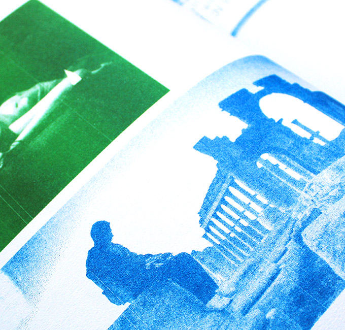
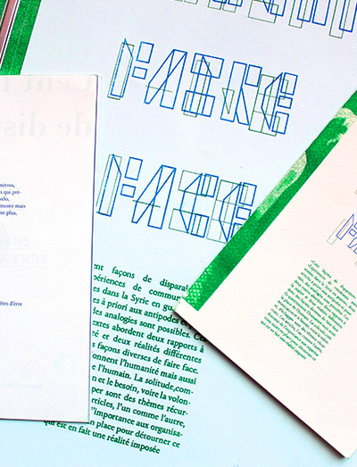
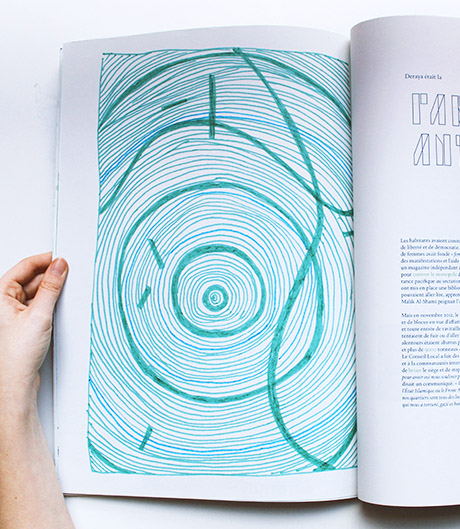
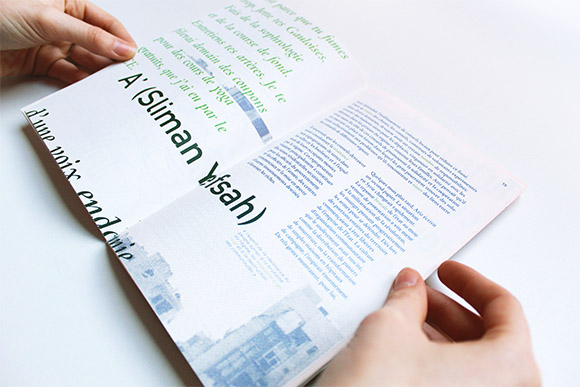
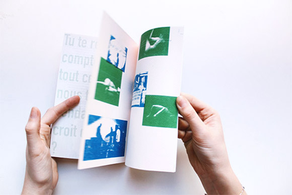
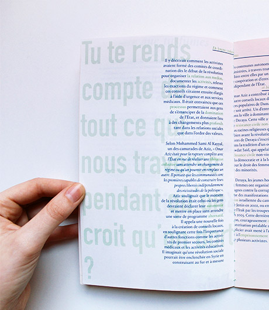
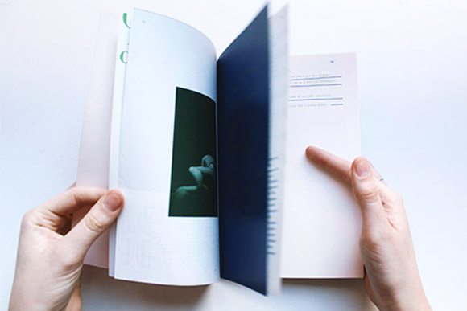

Comment faire face?
Workshop avec le collectif Formes Vives
1 Format ouvert—A2 / 1 Format ouvert—A5
Imprimé en risographie sur papier recyclé
Toulouse—Avril 2017
Projet réalisé au cours d’un workshop avec Adrien Zammit du collectif « Formes Vives »et en collaboration avec Clémence Estingoy.
Le questionnement central du projet était de (re) penser la diffusion d’articles du site d’informations Lundi-Matin. Comment rendre
accessible un contenu numérique? Penser d’autres contextes de lecture. Apporter du sens par la forme. Nous avons fait le choix
de rapprocher deux articles dont « Cent façons de disparaitre » qui traite de manière poétique le thème de l’hyperconnectivité
et l’impossibilité d’y échapper ainsi qu’ « Expériences de communes autonomes dans la Syrie en guerre » autour d’une édition
facilement transportable. L’édition aborde deux rapports à la réalité différents, et donc des façons diverses de faire face.
Ils questionnent l’humanité mais aussi la place de l’humain. La solitude, la pression de la société, la communication et le besoin,
voire la volonté, d’échapper sont des thèmes récurrents. Ces articles, l’un comme l’autre, donnent de l’importance aux organisations
mises en place pour détourner ce qui est en fait une réalité imposée. Le message est diffusé de manière plus légère et non moralisatrice
afin de le rendre accessible à une cible plus large. A priori ces deux écrits n’ont rien à voir et nous les avons mis en relation grâce
à la composition éditoriale. Nous avons travaillé chacune sur un article puis dans un second temps nous sommes intervenues chacune
sur la production de l’autre. La mise en page permet au lecteur de jongler d’un article à l’autre tout en établissant des liens.
Un principe coloré est mis en place afin de différencier les deux articles et nos interventions. Au fil de l’édition les articles se font écho.
Cette mise en page permet une autre interprétation de ces articles.
Le questionnement central du projet était de (re) penser la diffusion d’articles du site d’informations Lundi-Matin. Comment rendre
accessible un contenu numérique? Penser d’autres contextes de lecture. Apporter du sens par la forme. Nous avons fait le choix
de rapprocher deux articles dont « Cent façons de disparaitre » qui traite de manière poétique le thème de l’hyperconnectivité
et l’impossibilité d’y échapper ainsi qu’ « Expériences de communes autonomes dans la Syrie en guerre » autour d’une édition
facilement transportable. L’édition aborde deux rapports à la réalité différents, et donc des façons diverses de faire face.
Ils questionnent l’humanité mais aussi la place de l’humain. La solitude, la pression de la société, la communication et le besoin,
voire la volonté, d’échapper sont des thèmes récurrents. Ces articles, l’un comme l’autre, donnent de l’importance aux organisations
mises en place pour détourner ce qui est en fait une réalité imposée. Le message est diffusé de manière plus légère et non moralisatrice
afin de le rendre accessible à une cible plus large. A priori ces deux écrits n’ont rien à voir et nous les avons mis en relation grâce
à la composition éditoriale. Nous avons travaillé chacune sur un article puis dans un second temps nous sommes intervenues chacune
sur la production de l’autre. La mise en page permet au lecteur de jongler d’un article à l’autre tout en établissant des liens.
Un principe coloré est mis en place afin de différencier les deux articles et nos interventions. Au fil de l’édition les articles se font écho.
Cette mise en page permet une autre interprétation de ces articles.







